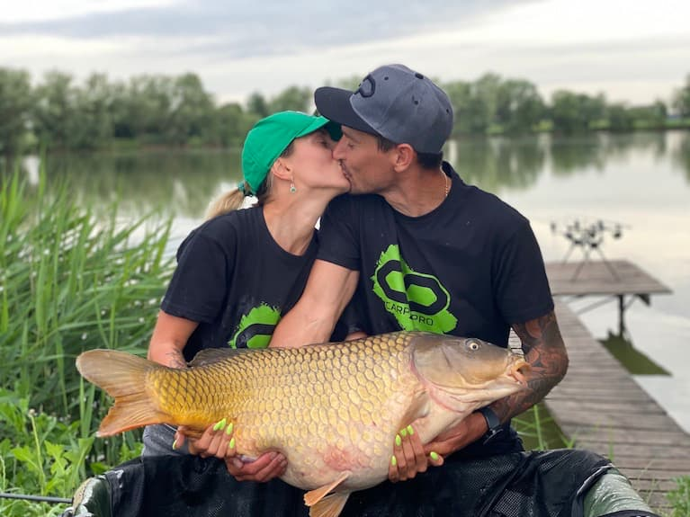
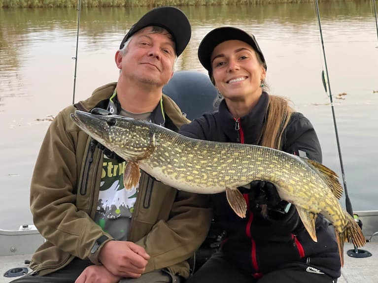
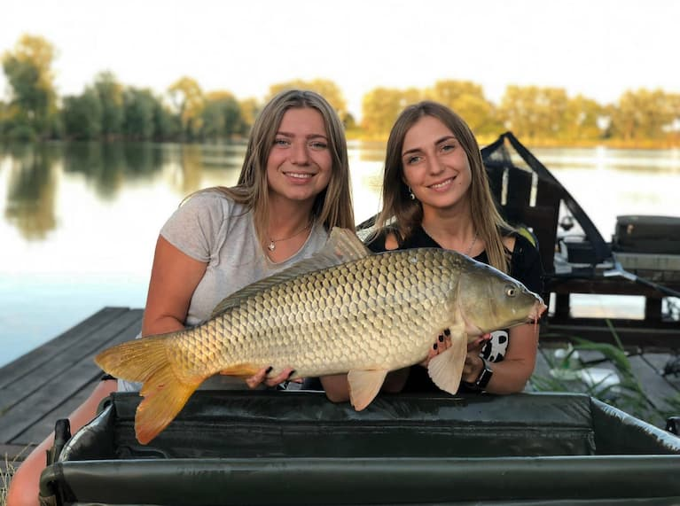
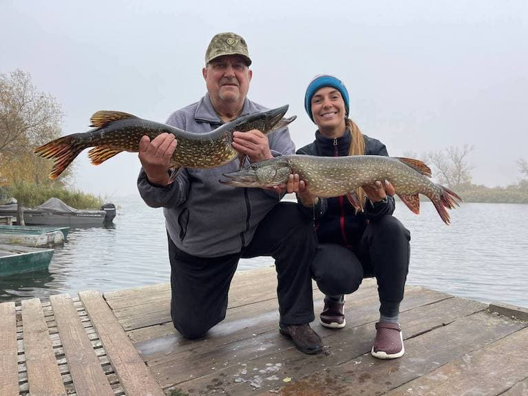
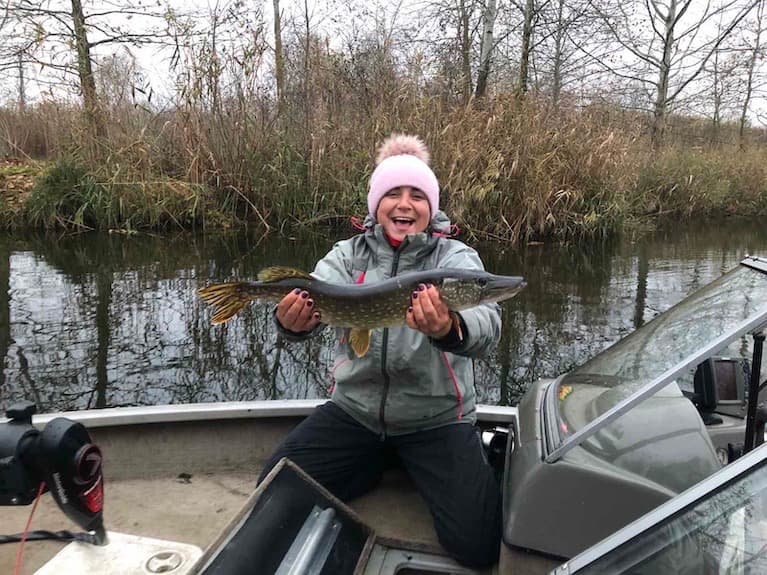
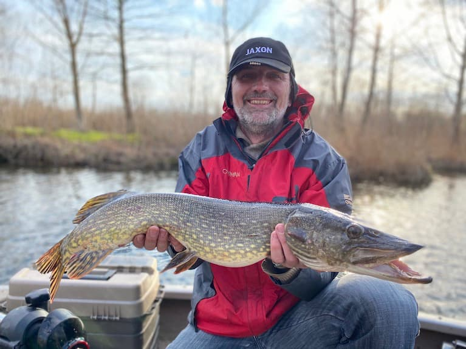

Катя Рибалка - це призвище чи псевдонім?
Це стиль життя!
З часів мого дитинства, як батько вперше взяв на риболовлю і по цей день - рибалка то моє хоббі і моє життя.
Пізніше захоплення переросло в щось більше і тепер Катя Рибалка - це найвідоміша дівчина-рибалка України і один з
найбільших риболовних ютуб каналів! Наразі я впевнена, що розвивати українську риболовлю, культуру рибалки та україномовний контент - це мій прямий
обов’язок.
Можу похвалитись тим, що долучила до риболовлі вже десять тисяч людей, завдяки моїм відео.
Навіть ті, хто жодного разу не тримав вудку в руках стали рибалками.
Переконайтесь самі - Мій канал YouTube
Вся моя родина є риболови. Мама, тато, сестра, дідусь, хрещений та чоловік, а також майже всі мої друзі! Саме це захоплення дає нам змогу бути ближче один з одним.
Ми дуже полюбляємо рибалку, часто це великі сімейні подорожі, дружні веселощі, свята та дні народження,
а найголовніше - це багато спогадів з найріднішими людьми, які залишаються на все життя та згадуються в колі близьких людей майже щоразу!
Разом ми об’їздили всю нашу рідну Україну, та встигли порибалити в деяких інших країнах.
На фотографіях ничже можна ознайомитися з кожною близькою мені людиною.

Мій чоловік - Олександр. Так визначилась доля, що ми познайомились саме на риболовлі.
Тато навчив ловити щуку, а чоловік коропа.
Саша дуже круто розбирається в короповій риболовлі і саме це його улюблена справа життя.
Ми подорожуємо всією країною полюючи на величезних коропів. Наразі наш рекорд короп 20,4 кг!

Мій тато - Михайло Миколайович. Саме тато долучив мене до риболовлі коли мені було 4 роки. З тих пір ми разом рибалимо і подорожуємо.
Більше всього тато полюбляє ловити щуку. Має човен, що повністю обладнан для пошуку «зубчатої».
.

Моя сестра - Єлизавета Михайлівна. В неї схожа історія життя з риболовлею, звісно тато навчав цій справі. Крім того що Ліза розділяє наші сімейні інтереси в рибальській справі, вона ще дуже і дуже смачно готує, причому з дитинства! Я би сказала, що у неї хист до кулінарії! І до «комп’ютерних справ», бо саме Ліза створила для мене цей сайт! Дякую ☺️

Мій дідусь - Микола Олександрович. Найстарший рибалка нашої родини! Колись він навчив тата рибалити, а тато мене.
Дуже полюбляє готувати страви з риби, усілякі консерви. Ловить всю рибу, як хижака так і мирну.

Мама - Оксана Володимирівна. Колись так само як і я піддалась чарам риболовлі, тільки від свого чоловіка. Мама дуже любить ловити щуку і готувати з неї страви.
Дуже часто займається морською риболовлею в Чорному морі.
Ловить бичка, саргана, ставридку, тощо.

Хрещений - Євген Анатолійович. Дуже серйозний спеціаліст в галузі електроніки, механіки, тощо.
Йому дуже пощастило зустріти мого батька, бо саме так і з’явилась риболовля в його житті, а в моєму - чудовий хрещений!